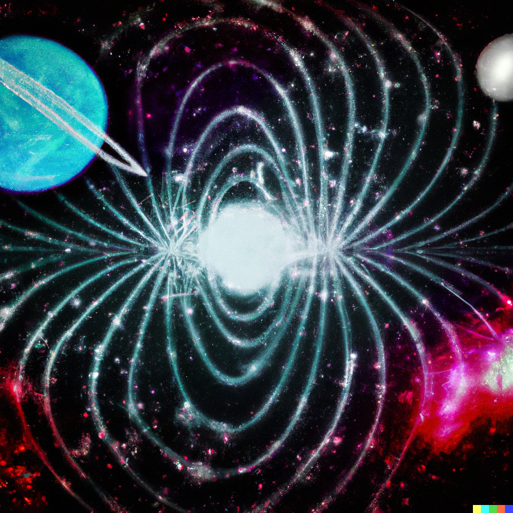

Epic Music

当我们说到“创作方式”这个非常宽泛的概念的时候，或许我们所说的实际上可能是创作工具，配器模版，一种可识别的织体甚至是一种曲式结构。这里所展示的两段音乐所使用的正是类似的所谓“创作方式”。 他们所表现的情绪发展非常类似（所谓的渐进式），乐段结构类似，配器都使用了大型管弦编制，在织体中也可以找到类似的部分（例如弦乐的固定音型，钢琴上的琶音动机）。这类音乐在影视作品中往往出现在比较大的场面中，因此我把这种风格称之为“Epic Music”(史诗音乐)。


00:00 / 00:00
7th Sense
1. 7th Sense （点击这里在Bilibili上收听 bilibili）
乐曲名暗示了一些这首曲子在概念阶段的一些想法，也就是7拍的律动。在这个拍号的基础上构建出一个钢琴的琶音动机，再由不断扩展配器规模、加入和声进行等方式发展出新的乐段。 在中段有一处几乎全是节奏而旋律消失的部分是我在这类风格音乐中非常喜欢使用的一个织体结构。他的功能像是类似于EDM或者金属核这类音乐中的“break down”，是一个引入新的节奏型或者固定音型非常好的工具，同时也是新的乐段旋律正式出现之前的铺垫。 点击这里在Bilibili上收听：


00:00 / 00:00
2. NeoWise （点击这里在Bilibili上收听 bilibili）
正如简介所说，这两段音乐使用了几乎完全一样的“创作方式”，类似于同一条流水线上生产的但所使用原料不同的产品（虽然我不喜欢这个类比）。而相比前者，这一段音乐的最初的概念是一段和声进行。 其他的要素，可以很明显的看出，在创作时的死路上是几乎一致的：钢琴琶音的动机，节奏型组成的中段，渐进式的音乐情绪，以及相同的色彩类或是氛围类的乐器使用（例如失真电吉他，合成器sub等）。